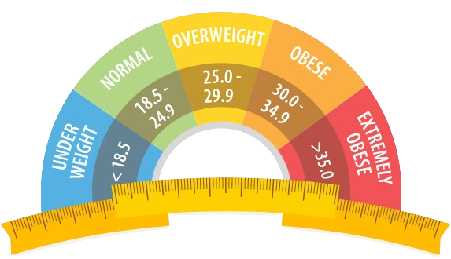

BODY MASS INDEX
Body Mass Index (BMI) is widely used as an indicator of body fat content. Your weight alone is not sufficient to establish if you are in a healthy weight range. For example, a tall but slender person can weigh more than a short but plump individual. But the former may enjoy better health as long as their weight is suitable for their height. The ideal weight is also likely to differ for men and women of similar heights.
